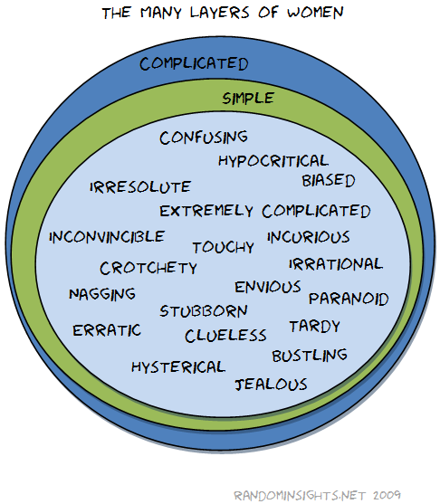

{kind=link}
Once more in my new best-most-favoritest font in the world. By the way, it was really hard to come up with this list without being too much of a geek.
Autor: saxx
Adventgewinnspiele …
… schießen jedes Jahr, der Name verrät es schon, pünktlich zum 1. Dezember bzw. 1. Advent wie die Christbäume aus dem Boden, etwa hier, hier, hier oder sogar hier. Offenbar sind schon viele so in Weihnachtsstimmung, dass sie gar nicht genug bekommen können vom Verschenken.
Eine nette Marketingidee ist es allemal, vor allem wenn es was Brauchbares zu gewinnen gibt. Schön ist auch, dass oft richtige Perlen dabei sind, wo man dank der vergleichsweise geringen Anzahl an Teilnehmern realistische Gewinnchancen hat.
Und tatsächlich: Gleich zum Auftakt des Adventgewinnspiels von Catalysts konnte ich massiv abräumen – ein Dinner for 2 in the Dark. Fein! Nachdem man nur einmal gewinnen darf, kann ich jetzt ohne Angst auf übermäßige Konkurrenz bedenkenlos Werbung machen: 23 Preise gäbs noch dort, nicht von der etwas komplexen Anmeldung abhalten lassen.
So sehr ich mich über diesen sehr ordentlichen Gewinn freue, ein Problem wird offenbar: Mit wem soll ich als Neo-Single auf ein Dinner for Two gehen? Beide Portionen allein verputzen wird, das habe ich aus vorwurfsvollen Blicken von Kellnern auf die harte Tour lernen müssen, nicht so gern gesehen (auch wenn es diesmal wenigstens finster wär). Meine zahllosen Bettgespielinnen kommen auch nicht in Frage, weil die sind nicht zum Ausführen gedacht, Mutter hat schon was vor und alle Cousinen wollen nicht mehr mit mir gesehen werden. Hmm. Hmmm.
Nun ja, ein paar Monate hab ich ja noch Zeit. Vielleicht könnte ich ja mal meine Verbindungen in die Personalbranche nutzen, um eine entsprechende Anzeige zu schalten …
The many layers of women

There's a second version of it, too. I'm not sure which one is funnier, I actually think the second one. The first one is a little too obvious.
{kind=link}
Ohne Waschmaschine
Bergab geht es mit mir. Nicht genug, dass im September Sarah unsere gemeinsame Wohnung geräumt hat1 – letzte Woche ist dann auch noch die Waschmaschine ausgezogen.
Das bedeutet, dass ich defacto wieder ins Teenageralter zurückgefallen bin (wenn ich überhaupt schon mal raus war): Ab sofort muss ich regelmäßig einen Berg Wäsche zu Muttern heim schaffen; zumindest so lange, bis ich weiß, wo ich als nächstes wohnen werde.
Die Waschmaschine ist das ultimative Zeichen der Selbstständigkeit. Damit wird die letzte Brücke zur elterlichen Abhängigkeit gekappt, endlich ist man wirklich erwachsen und steht auf den eigenen Beinen. Umso vernichtender ist es dann, wenn man nach Jahren der (offensichtlich nur scheinbaren) Unabhängigkeit plötzlich wieder mit einem Korb voller Unterhosen und schamvoll gesenktem Blick daheim vor der Tür steht.
Und, was man gerne unterschätzt und ich jetzt aus erster Hand merke: Eine Waschmaschine im Badezimmer bedeutet auch viel wichtige Ablagefläche für Toiletartikel des täglichen Bedarfs. Ohne ist das kleine Bord unter dem Spiegel sowie jedes freie Plätzchen am Waschbecken ärgerlich vollgeräumt …
—
1 Und ich deswegen auf der Suche nach einer neuen Singlewohnung bin. Ein Unterfangen, für das ich in etwa so motiviert bin wie für Genitalherpes.
6 Jahre alt …
… wird heute mein Blog. Damals am 19. November 2003 hab ich, gelangweilt im Studentenheim sitzend und fasziniert von diesem neuen Trend namens "Blogging" den ersten, sehr sinnlosen, Eintrag geschrieben. Die Besucherzahlen sind 2009 mit Abstand die höchsten, was aber weniger meiner aktuellen Schreibfaulheit zu verdanken ist, sondern so Google-Dauerbrennern wie Natascha Kampusch, Windows 7 und Studenten.
Obwohl ich derzeit sehr wenig Einträge schreibe, gibt es, allen üblen Gerüchten zum Trotz, keinerlei Pläne, mein Blog auslaufen zu lassen. Zwar hab ich, als frischgebackener Single, plötzlich viel weniger Gründe vor dem PC zu sitzen, aber es wird definitiv noch lange etwas zu lesen geben auf RandomInsights.net.
Und als Vorgeschmack darauf folgt ein Foto, dass mir vor zwei Wochen bei meinem Portugal-Urlaub vor die iPhone-Linse (das erklärt die schlechte Qualität) gelaufen ist. In diesem Restaurant ist nicht nur ein ungewöhnlicher Zeichensatz für das scharfe ß im Einsatz, sondern es wird offenbar auch sehr viel Wert darauf gelegt, dass Gerichte namens "Juniortüte" oder "Kinderpizza" auch tatsächlich das halten, was sie versprechen:
{kind=link}
Die Unterhosen-Problematik
Kaum ein Comedian, der sich noch nicht über die männliche Verbundenheit zu seinen Unterhosen oder Boxershorts1 lustig gemacht hat. Solange das Teil noch irgendeinen Halt findet und das beste Stück zumindest noch teilweise bedeckt wird, kommt ein Ersatz überhaupt nicht in die Frage.
Keine Frage, jeder Mann ist sich bewusst, dass er in diesen alten, löchrigen Stofffetzen mit dem ausgeleierten Gummi lächerlich und alles andere als begehrenswert aussieht. Trotzdem: Warum soll man ein funktionierendes Stück Kleidung achtlos wegwerfen, obwohl es über Jahre hervorragende Dienste geleistet hat?
Wobei der Grund dafür sicher weniger in der emotionalen Verbundenheit liegt, sondern in der durch das Wegwerfen resultierenden Notwendigkeit, neue Unterwäsche kaufen zu müssen. Kleidung zu kaufen ist jedes Mal eine Qual, und das gilt besonders für Unterwäsche. Es gibt aber übrigens auch Mittel und Wege, der eigenen Unterwäsche neue Kraft zu verleihen; aber, seien wir uns ehrlich, das wäre wie ein Patient, der nur noch von Maschinen am Leben erhalten wird und seine restliche Existenz als vernunftloses Gemüse zubringen muss.
Glücklicherweise sind solche Probleme aber gut von der Öffentlichkeit versteckt2. Das Fashion-Statement, das man mit greiser Unterwäsche macht, bekommt nur die eigene Partnerin zu sehen. Und die hat sowieso immer eine überlange Liste an Verbesserungszielen für ihren Mann, wo eine solche Kleinigkeit schnell mal untergeht oder noch schlimmeren No-Gos untergeordnet wird.
Kommt man aber so wie ich in die Lage, nach Jahren plötzlich wieder neue Mädchen kennen lernen zu müssen, stellen die Boxershort-Reliquien auf einmal ein Problem dar. So lange konnte man es hinauszögern, diese altgedienten Veteranen in den Ruhestand zu schicken, da erscheint dies jetzt als eine sinnlose Verschwendung. Und doch hat man keine Wahl.
Wie die alten Wikinger werde ich wohl eine rituelle Barke bauen, sie mit jenen beladen müssen, die ihr Leben lang gedient haben, ohne selbst nach etwas zu bitten und sie dann brennend aufs Meer hinaus treiben lassen. Und ich als gramgebeugter Hinterbliebener werde ihr mit Tränen in den Augen so lange nachschauen, bis sie langsam im Nebel verschwindet und nur noch ein sanftes Leuchten in der Entfernung von meinen treuen Dienern Freunden berichtet.
—
1 Ähnliches gilt übrigens für Ripp-Unterleibchen und lieb gewonnene T-Shirts, manchmal auch für Socken.
2 Wenn man sich nicht entgegen jeder Vernunft, so wie ich eben, outet.
Wo wohnen?
In drei Monaten ziehe ich also aus meiner Wohnung aus – früher war das noch "unsere", seit einigen Wochen wohne ich aber allein. Das ist auch schön so, ich wohne gern allein; problematisch ist jedoch, dass die Wohnung zu groß für einen allein ist, vor allem für mein schmales Portmonnaie. Wohin also als nächstes?
Günstigere Mietwohnung? Die Variante für Erwachsene, gerade deswegen vielleicht nicht optimal für mich geeignet. Finanziell auch eine größere Hürde, sehr schwierig ist vor allem aber, die richtige zu finden in Linz. Wohnung mein' ich.
Wohnung kaufen? Zu früh, zu viel Verantwortung, zu teuer, zu endgültig.
WG? All meinen früheren Erfahrungen zum Trotz ziehe ich auch wieder eine Wohngemeinschaft in Betracht, dieses Konzept steht und fällt aber mit den richtigen Mitbewohnern. Der gute W. wäre grundsätzlich zwar ganz gut geeignet und selber grad auf der Suche1, scheidet aber leider wegen akuten Haarproblemen (weniger seine als die seiner Katzenungetüme) aus. Und andere vertretbare Mitbewohner sind nicht zu sehen am Horizont. Dabei ließe sich zu dritt ein sehr schönes Domizil finanzieren.
Zurück zu den Eltern? Durchaus denkbar – für das Geldbörserl sicherlich die größte Wohltat. Platz wär auch mehr als genug, nur ist die Lage des heimatlichen Elternhauses suboptimal, denn ich wäre praktisch von meinem Leben abgeschnitten; und fürs Pendeln hab ich kaum die nötige Ausgeglichenheit. Außerdem würde das, wie mir heute schon von G. vorgeworfen wurde, das Klischee des Computerfritzn im KellerDachboden von Muttern perfekt machen.
Studentenheim? Das kristallisiert sich tatsächlich immer mehr als die beste Zwischenlösung heraus. Billig und sorglos in einem gemütlichen Winz-Zimmerchen wohnen (Putzfrau inklusive, eventuell sogar das Essen). Es gäbe auch das eine oder andere Heim in akzeptabler Nähe zur Innenstadt. Möglicherweise hab ich aber nicht mehr die Geduld und Muße, mich mit überlauten, ausufernden Nachbarn herumzuärgern, mit unfreundlichen Putzfrauen oder beischlafsfeindlichen Besuchsregeln.
Weiß irgendjemand ein Plätzchen für mich?
—
1 Hat mir aber Beziehungen und Empfehlungsschreiben voraus.
Studieren ohne Leistungsdruck
Als Student versuche ich redlich, mich mit den Uni-Besetzern in ganz Österreich zu solidarisieren – es geht aber einfach nicht. Wenn ich nur die lange Liste an Forderungen lese, sträubt sich alles in mir. „Studieren ohne Konkurrenz- und Leistungsdruck“ heißt es da unter anderem1, an Absurdität wohl kaum zu überbieten. Kein Wunder, dass viele Studenten Schwierigkeiten am Arbeitsmarkt haben, wenn sie mit dieser Waldorfschuleinstellung aus ihrem Publizistik- oder Sozialwirtschaftsstudium kommen und plötzlich mit der bösen Welt konfrontiert werden, wo es halt, oh mein Gott, nicht immer ohne Druck geht.
Keine Frage, auch ich bin für erheblich mehr Geld für die Unis, für mehr Forschung und Platz für jeden Studierenden, der sein Studium ernst nimmt. Aber wer es wagt, eine solch lächerliche Forderungsliste aufzustellen und zu veröffentlichen, der darf sich nicht wundern, wenn die arbeitende Gesellschaft (ja genau, die mit dem Leistungsdruck) eher angewidert als unterstützend ist.
—
1 Ich hoffe zu Gunsten der österreichischen Studentenschaft innig, dass diese Aussage mit dem Leistungsdruck von den Medien aus dem Zusammenhang gerissen, missverstanden und künstlich aufgebauscht wurde. Wenn nicht, ist dem Wirtschaftsstandort Österreich keine gute Zukunft beschert.
Die größte Tugend einer Frau …
… , und zugleich die seltenste, ist Unkompliziertheit.
Was nutzt alle Schönheit, alle Intelligenz oder aller Humor der Welt, wenn jede einfache, klare Situation aus heiterem Himmel plötzlich umständlich, vertrackt und komplex gemacht wird? Unkomplizierte Frauen sind aber leider so selten und kostbar wie ein vierblättriges Kleeblatt – das ist vermutlich die einzige Lehre, die man aus den vielen „Wie verstehe ich als Mann die Frauen“-Büchern ziehen kann.
Kennt jemand eine?
Liwest und das Monopol
Seit ich wieder alleine wohne, schaue ich kaum mehr fern. Es läuft sowieso nur Dreck, und dafür gibt es schließlich Youtube. Mein Kabelanschluss ist also eigentlich überflüssig; was ich noch regelmäßig schaue, sind Serien – die kommen aber übers Internet – sowie die eine oder andere ZIB2, die gibts aber auch über Digitalfunk.
Letzte Woche flatterte ein Brieflein von Liwest herein, wo sie eine Preiserhöhung für den Kabelanschluss ankündigten. Zwar nur 80 Cent im Monat, aber das für einen schlechten Analog-Anschluss, an dem es nur einen Bruchteil der verfügbaren Sender überhaupt zur Verfügung stehen. Für einen brauchbaren Digitalanschluss müsste man zu den knapp 15 Euro im Monat Grundgebühr für Analog-Kabel noch einiges drauflegen.
Die Preiserhöhung hab ich nun zum Anlass genommen, meinen Kabelanschluss zu kündigen. Alles wie es sich gehört, nachdem ich die AGB gelesen hatte, per schriftlichen Rechnungs-Widerspruch und formeller Kündigung. Heute kam das Antwortschreiben.
Liwest hat, gerade in der Innenstadt, dass Quasi-Monopol auf Fernsehen. Neuere Entwicklungen wie aon-TV sind noch kaum verbreitet (und, was man so hört, auch nicht das Gelbe vom Ei) und Satellitenschüsseln sind in vielen Mietverträgen schon von vornherein verboten. Und der Monopolist kann sich offenbar alles erlauben. Was bei einer absurden Mindestvertragsdauer von 2 Jahren bedeutet, dass ich noch fast 10 Monate auf die Wirksamkeit meiner Kündigung warten muss. Und das bei einem Kabelanschluss, der sowieso verfügbar ist und der vermutlich ohne Liwest-Vertrag genau so gut funktionieren würde, denn das Signal ist sowieso im Kupfer. Der ehrliche Zahler wird also sozusagen doppelt geschröpft. Wenn wenigstens die Qualität des Angebots stimmen würde, aber ohne Wettbewerb gibt es halt hier auch keine Verbesserung.